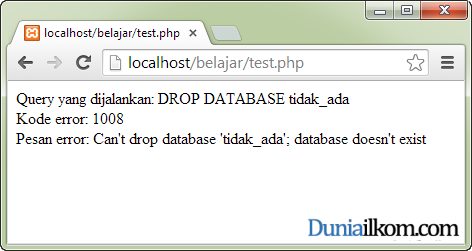

Kedua fungsi yang akan kita bahas dalam tutorial kali ini berkaitan dengan cara penanganan kesalahan dari MySQL. Ketika sebuah query dijalankan, pesan error yang dihasilkan oleh MySQL tidak langsung ditampilkan PHP. Untuk menampilkan pesan kesalahan dari MySQL, kita harus memanggilnya menggunakan fungsi mysql_errno() dan mysql_error().
Agar lebih informatif, ketika query tidak berjalan dengan semestinya, PHP menyediakan 2 buah fungsi untuk menampilkan pesan error dari MySQL, yaitu fungsi mysql_errno() dan mysql_error(). Kedua fungsi ini membutuhkan 1 buah argumen yang bersifat opsional, yakni variabel hasil pemanggilan fungsi mysql_connect(). Tetapi, jika argumen tidak ditulis, PHP akan menggunakan koneksi MySQL terakhir yang tersedia.
Fungsi mysql_errno() akan menampilkan nomor atau kode error MySQL, sedangkan fungsi mysql_error() akan menampilkan penjelasan error tersebut.
Sebagai contoh penggunaan kedua fungsi tersebut, silahkan jalankan kode program berikut ini:
1
2
3
4
5
6
7
8
9
10
11
12
13
14
15
16
17
18
19 |
<?php//buat koneksi dengan MySQL$link=mysql_connect('localhost','root',''); //jika koneksi gagal, langsung keluar dari PHPif (!$link){ die("Koneksi dengan MySQL gagal");} //jalankan query$query="DROP DATABASE tidak_ada";$result=mysql_query($query,$link);echo "Query yang dijalankan: $query";echo "<br />";echo "Kode error: ".mysql_errno($link);echo "<br />";echo "Pesan error: ".mysql_error();?> |

Pada kode diatas, saya mencoba menjalankan perintah untuk menghapus database ‘tidak_ada’ yang memang tidak tersedia di dalam MySQL. Jika kita menjalankan query tersebut tanpa bantuan fungsi mysql_errno() dan mysql_error(), maka kita tidak tahu apa pesan error dari MySQL.
Perhatikan juga bahwa pada pemanggilan fungsi mysql_error() pada baris terakhir, saya tidak memberikan argumen, karena sifatnya yang opsional.
Fungsi mysql_errno() dan mysql_error() yang kita bahas disini sangat berguna di dalam proses pembuatan program, karena kita bisa mengetahui kenapa hasil dari MySQL tidak sesuai dengan apa yang kita inginkan.
Masih berkaitan dengan pemeriksaan hasil query, di dalam tutorial belajar PHP MySQL selanjutnya kita akan membahas tentang Cara Menampilkan Jumlah Baris Tabel MySQL menggunakan fungsi mysql_num_rows().